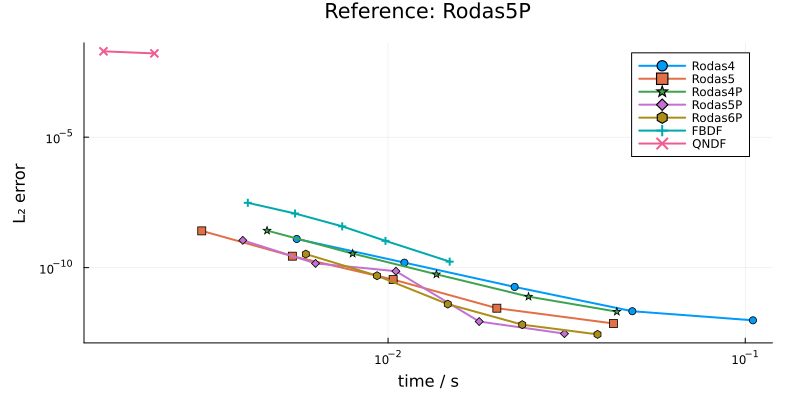
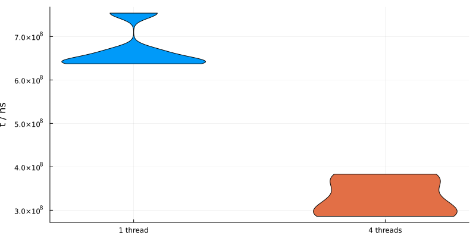
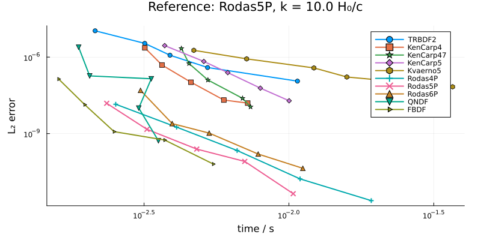
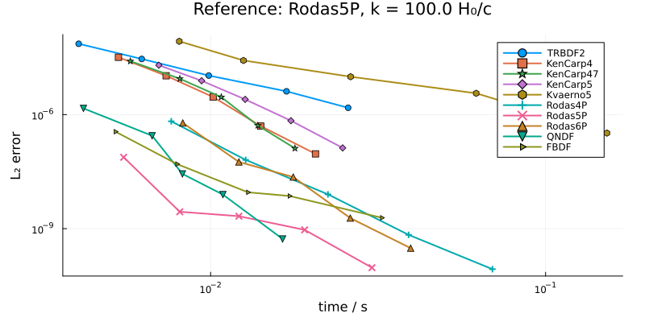
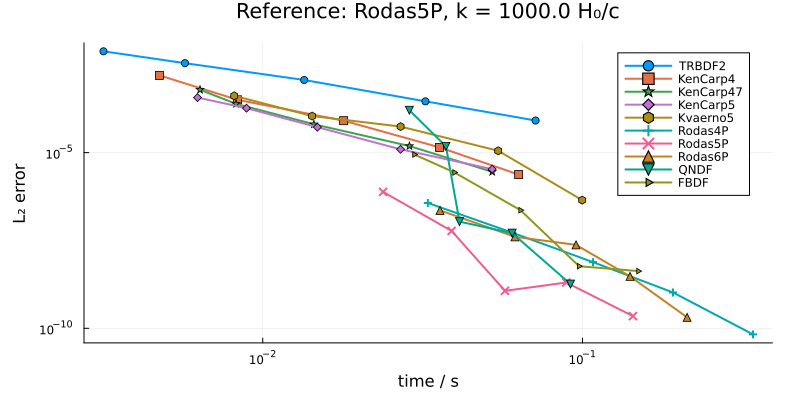
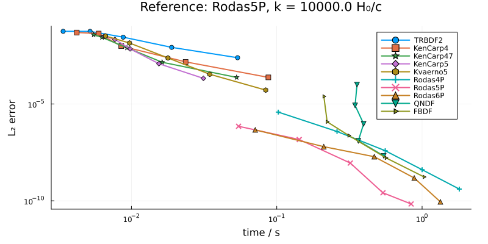
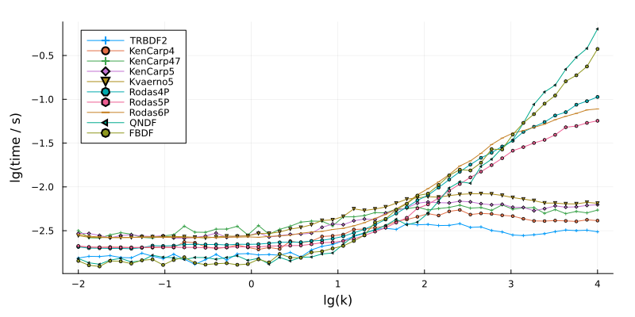
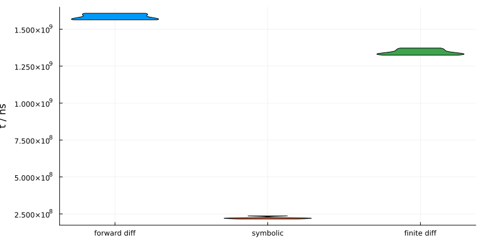
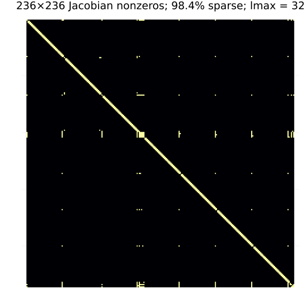
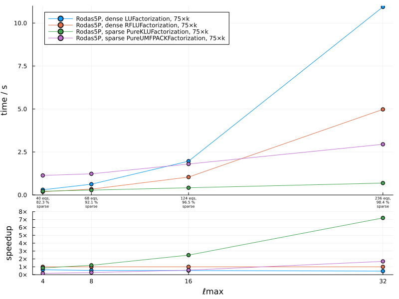

Performance and benchmarks
Model setup:
using MKL, LinearSolve, PureUMFPACK
using SymBoltz
using OrdinaryDiffEqRosenbrock, OrdinaryDiffEqSDIRK, OrdinaryDiffEqBDF
using Base.Threads, BenchmarkTools, Plots, BenchmarkPlots, StatsPlots
M = ΛCDM()
pars = parameters_Planck18(M)
prob = CosmologyProblem(M, pars)Hardware and package information
using Dates, InteractiveUtils, LinearAlgebra, Pkg, LibGit2
println("Build time: ", now(UTC), " UTC\n")
InteractiveUtils.versioninfo() # show computer information
println()
LinearAlgebra.versioninfo() # show BLAS backend and threads
println()
println("SymBoltz commit: ", LibGit2.head(pkgdir(SymBoltz)), "\n")
Pkg.status(; mode = Pkg.PKGMODE_MANIFEST) # show all package versionsBuild time: 2026-09-26T11:37:57.025 UTC
Julia Version 1.13.0
Commit d1c37793dd2 (2026-09-09 19:00 UTC)
Build Info:
Official https://julialang.org release
Platform Info:
OS: Linux (x86_64-linux-gnu)
CPU: 4 × AMD EPYC 9V45 96-Core Processor
WORD_SIZE: 64
LLVM: libLLVM-20.1.8 (ORCJIT, znver5)
GC: Built with stock GC
Threads: 4 default, 1 interactive, 4 GC (on 4 virtual cores)
Environment:
JULIA_DEBUG = Documenter
BLAS: libblastrampoline.so.5 (f2c_capable, cblas_divergence, complex_retstyle)
--> /home/runner/.julia/artifacts/27edf95310a71d47422663c3aea849f56efb1360/lib/libmkl_rt.so (ILP64)
--> /home/runner/.julia/artifacts/27edf95310a71d47422663c3aea849f56efb1360/lib/libmkl_rt.so (LP64)
Threading:
Threads.threadpoolsize() = 4
Threads.maxthreadid() = 8
LinearAlgebra.BLAS.get_num_threads() = 2
Relevant environment variables:
[none]
SymBoltz commit: dffab03677606e6aff26bcd8cd75a89d83075a2a
Status `~/work/SymBoltz.jl/SymBoltz.jl/docs/Manifest.toml`
[47edcb42] ADTypes v1.24.0
[14f7f29c] AMD v0.5.4
[a4c015fc] ANSIColoredPrinters v0.0.1
[621f4979] AbstractFFTs v1.5.0
[80f14c24] AbstractMCMC v5.17.0
[7a57a42e] AbstractPPL v0.15.5
[6e696c72] AbstractPlutoDingetjes v1.4.1
[1520ce14] AbstractTrees v0.4.5
[7d9f7c33] Accessors v0.1.45
[79e6a3ab] Adapt v4.7.1
[35492f91] AdaptivePredicates v1.2.0
[0bf59076] AdvancedHMC v0.8.7
[5b7e9947] AdvancedMH v0.8.10
[b5ca4192] AdvancedVI v0.7.0
[66dad0bd] AliasTables v1.1.3
[27a7e980] Animations v0.4.2
[7e558dbc] ArbNumerics v1.6.3
[dce04be8] ArgCheck v2.5.0
[ec485272] ArnoldiMethod v0.4.0
[7d9fca2a] Arpack v0.5.4
[4fba245c] ArrayInterface v7.30.2
[4c555306] ArrayLayouts v1.13.0
[67c07d97] Automa v1.2.0
[13072b0f] AxisAlgorithms v1.1.0
[39de3d68] AxisArrays v0.4.8
[aae01518] BandedMatrices v1.13.0
[198e06fe] BangBang v0.4.9
[18cc8868] BaseDirs v1.4.0
[ab8c0f59] BenchmarkPlots v0.1.0
[6e4b80f9] BenchmarkTools v1.8.0
[0e736298] Bessels v0.2.8
[e2ed5e7c] Bijections v0.2.2
[76274a88] Bijectors v0.16.3
[b2a6c25c] BinaryHeaps v1.1.0
[caf10ac8] BipartiteGraphs v0.1.14
[62783981] BitTwiddlingConvenienceFunctions v0.1.6
[8e7c35d0] BlockArrays v1.10.0
[70df07ce] BracketingNonlinearSolve v1.12.7
[fa961155] CEnum v0.5.0
[a61081fd] CLASS v0.3.0
[2a0fbf3d] CPUSummary v0.2.7
[96374032] CRlibm v1.0.2
[336ed68f] CSV v1.1.0
[159f3aea] Cairo v1.1.1
[13f3f980] CairoMakie v0.15.15
[49dc2e85] Calculus v0.5.2
[d360d2e6] ChainRulesCore v1.26.1
[0ca39b1e] Chairmarks v1.3.1
[9e997f8a] ChangesOfVariables v0.1.11
[ae650224] ChunkSplitters v3.2.0
[fb6a15b2] CloseOpenIntervals v0.1.13
[aaaa29a8] Clustering v0.15.8
[944b1d66] CodecZlib v0.7.9
[6b39b394] CodecZstd v0.8.7
[a2cac450] ColorBrewer v0.4.2
[35d6a980] ColorSchemes v3.31.0
[3da002f7] ColorTypes v0.12.3
[c3611d14] ColorVectorSpace v0.11.0
[5ae59095] Colors v0.13.2
⌅ [861a8166] Combinatorics v1.0.2
[38540f10] CommonSolve v0.2.14
[bbf7d656] CommonSubexpressions v0.3.1
[f70d9fcc] CommonWorldInvalidations v1.2.2
[34da2185] Compat v4.18.1
[b152e2b5] CompositeTypes v0.1.4
[a33af91c] CompositionsBase v0.1.2
[95dc2771] ComputePipeline v0.1.8
[2569d6c7] ConcreteStructs v0.2.8
[88cd18e8] ConsoleProgressMonitor v0.1.2
[187b0558] ConstructionBase v1.6.0
[d38c429a] Contour v0.6.3
[b7a15901] CoreMath v0.1.0
[adafc99b] CpuId v0.3.1
[a8cc5b0e] Crayons v4.2.0
[9a962f9c] DataAPI v1.16.0
[a93c6f00] DataFrames v1.8.2
[82cc6244] DataInterpolations v10.1.3
[48204bd6] DataStrings v1.1.0
[864edb3b] DataStructures v0.19.6
[e2d170a0] DataValueInterfaces v1.0.0
[927a84f5] DelaunayTriangulation v1.6.7
[8bb1440f] DelimitedFiles v1.9.1
[b429d917] DensityInterface v0.4.0
[2b5f629d] DiffEqBase v7.21.2
[459566f4] DiffEqCallbacks v4.19.4
[163ba53b] DiffResults v1.1.0
[b552c78f] DiffRules v1.16.0
[a0c0ee7d] DifferentiationInterface v0.7.21
[0703355e] DimensionalData v0.30.2
[b4f34e82] Distances v0.10.12
⌃ [31c24e10] Distributions v0.25.127
[ffbed154] DocStringExtensions v0.9.5
[e30172f5] Documenter v1.19.0
[5b8099bc] DomainSets v0.8.2
[eb426421] DoubleExponentialFormulas v0.1.0
[41ac09f5] Durations v1.4.0
[366bfd00] DynamicPPL v0.42.14
[7c1d4256] DynamicPolynomials v0.6.8
[cad2338a] EllipticalSliceSampling v2.0.0
[4e289a0a] EnumX v1.0.7
[f151be2c] EnzymeCore v0.8.21
[429591f6] ExactPredicates v2.2.9
[e2ba6199] ExprTools v0.1.11
[55351af7] ExproniconLite v0.10.14
[411431e0] Extents v0.1.6
[c87230d0] FFMPEG v0.4.5
[b86e33f2] FFTA v0.3.1
[7a1cc6ca] FFTW v1.10.0
[7034ab61] FastBroadcast v1.4.0
[cf66c380] FastChebInterp v1.3.1
[9aa1b823] FastClosures v0.3.2
[a4df4552] FastPower v1.5.0
[5789e2e9] FileIO v1.20.0
[8fc22ac5] FilePaths v0.9.0
[48062228] FilePathsBase v0.9.24
[1a297f60] FillArrays v1.17.1
[64ca27bc] FindFirstFunctions v3.4.0
[6a86dc24] FiniteDiff v2.33.0
⌅ [53c48c17] FixedPointNumbers v0.8.6
[4a37a8b9] FlexiChains v0.6.40
[1fa38f19] Format v1.3.7
[f6369f11] ForwardDiff v1.4.6
[b38be410] FreeType v4.1.1
[663a7486] FreeTypeAbstraction v0.10.8
[a85aefff] FunctionMaps v0.1.2
[069b7b12] FunctionWrappers v1.1.3
[77dc65aa] FunctionWrappersWrappers v1.13.0
[d9f16b24] Functors v0.5.3
[46192b85] GPUArraysCore v0.2.1
[28b8d3ca] GR v0.73.27
[a0844989] Gamma v1.2.0
[14197337] GenericLinearAlgebra v0.4.1
[5c1252a2] GeometryBasics v0.5.13
[d7ba0133] Git v1.5.0
[a2bd30eb] Graphics v1.1.3
[86223c79] Graphs v1.15.0
[3955a311] GridLayoutBase v0.11.3
[076d061b] HashArrayMappedTries v0.2.0
[3e5b6fbb] HostCPUFeatures v0.1.18
[34004b35] HypergeometricFunctions v0.3.30
[b5f81e59] IOCapture v1.0.0
[615f187c] IfElse v0.1.1
[2803e5a7] ImageAxes v0.6.12
[c817782e] ImageBase v0.1.7
[a09fc81d] ImageCore v0.10.5
[82e4d734] ImageIO v0.6.10
[bc367c6b] ImageMetadata v0.9.10
[3263718b] ImplicitDiscreteSolve v2.3.0
[9b13fd28] IndirectArrays v1.0.0
[d25df0c9] Inflate v0.1.5
[22cec73e] InitialValues v0.3.1
⌅ [842dd82b] InlineStrings v1.4.6
[18e54dd8] IntegerMathUtils v0.1.4
[85a1e053] Interfaces v0.3.2
[a98d9a8b] Interpolations v0.16.3
[d1acc4aa] IntervalArithmetic v1.0.12
[8197267c] IntervalSets v0.7.14
[3587e190] InverseFunctions v0.1.17
[41ab1584] InvertedIndices v1.3.1
[92d709cd] IrrationalConstants v0.2.6
[f1662d9f] Isoband v0.1.1
[c8e1da08] IterTools v1.10.0
[82899510] IteratorInterfaceExtensions v1.0.0
[1019f520] JLFzf v0.1.11
[692b3bcd] JLLWrappers v1.8.0
[682c06a0] JSON v1.9.0
[ae98c720] Jieko v0.2.1
[b835a17e] JpegTurbo v0.1.6
[ccbc3e58] JumpProcesses v9.33.1
[5ab0869b] KernelDensity v0.6.12
[ba0b0d4f] Krylov v0.10.10
[2faa5264] LHLFactorization v2.2.2
[b964fa9f] LaTeXStrings v1.4.1
[23fbe1c1] Latexify v0.16.12
[10f19ff3] LayoutPointers v0.1.17
[0e77f7df] LazilyInitializedFields v1.3.0
[8cdb02fc] LazyModules v0.3.1
[1d6d02ad] LeftChildRightSiblingTrees v0.3.0
[6f1fad26] Libtask v0.9.19
[87fe0de2] LineSearch v0.1.18
[d3d80556] LineSearches v7.8.2
[7ed4a6bd] LinearSolve v5.18.1
[6fdf6af0] LogDensityProblems v2.2.0
[996a588d] LogDensityProblemsAD v1.13.1
[2ab3a3ac] LogExpFunctions v1.0.2
[e6f89c97] LoggingExtras v1.2.0
[bdcacae8] LoopVectorization v0.12.174
[be115224] MCMCDiagnosticTools v0.3.19
[33e6dc65] MKL v0.9.1
[e80e1ace] MLJModelInterface v1.12.1
[1914dd2f] MacroTools v0.5.16
[ee78f7c6] Makie v0.24.15
[d125e4d3] ManualMemory v0.1.8
[dbb5928d] MappedArrays v0.4.3
[d0879d2d] MarkdownAST v0.1.3
[0a4f8689] MathTeXEngine v0.6.9
[743831d1] MatterPower v0.5.2
[bb5d69b7] MaybeInplace v0.1.8
[eff96d63] Measurements v2.14.1
[442fdcdd] Measures v0.3.3
[e1d29d7a] Missings v1.2.0
[dbe65cb8] MistyClosures v2.1.0
[961ee093] ModelingToolkit v11.45.1
[7771a370] ModelingToolkitBase v1.77.0
[6bb917b9] ModelingToolkitTearing v1.20.6
[e94cdb99] MosaicViews v0.3.4
⌅ [2e0e35c7] Moshi v0.3.9
[46d2c3a1] MuladdMacro v0.2.7
[102ac46a] MultivariatePolynomials v0.5.20
[6f286f6a] MultivariateStats v0.10.5
[d8a4904e] MutableArithmetics v1.8.1
[d41bc354] NLSolversBase v8.0.1
[77ba4419] NaNMath v1.1.4
[b8a86587] NearestNeighbors v0.4.29
[f09324ee] Netpbm v1.1.1
[8913a72c] NonlinearSolve v4.32.0
[be0214bd] NonlinearSolveBase v2.54.0
[5959db7a] NonlinearSolveFirstOrder v2.10.0
[9a2c21bd] NonlinearSolveQuasiNewton v1.15.3
[26075421] NonlinearSolveSpectralMethods v1.8.3
[e7bfaba1] NumericalIntegration v0.3.4
[510215fc] Observables v0.5.5
[6fe1bfb0] OffsetArrays v1.17.0
[67456a42] OhMyThreads v0.8.6
[52e1d378] OpenEXR v0.3.3
[429524aa] Optim v2.3.2
[3bd65402] Optimisers v0.4.9
[7f7a1694] Optimization v5.9.1
[bca83a33] OptimizationBase v5.7.0
[36348300] OptimizationOptimJL v0.4.21
⌅ [bac558e1] OrderedCollections v1.8.2
[6ad6398a] OrdinaryDiffEqBDF v2.4.11
[bbf590c4] OrdinaryDiffEqCore v4.18.0
[4302a76b] OrdinaryDiffEqDifferentiation v3.12.3
[127b3ac7] OrdinaryDiffEqNonlinearSolve v2.9.8
[43230ef6] OrdinaryDiffEqRosenbrock v2.7.4
[b4bd8bb3] OrdinaryDiffEqRosenbrockTableaus v2.4.2
[2d112036] OrdinaryDiffEqSDIRK v2.9.6
[b1df2697] OrdinaryDiffEqTsit5 v2.1.4
[90014a1f] PDMats v0.11.41
[f57f5aa1] PNGFiles v0.4.5
[19eb6ba3] Packing v0.5.1
[5432bcbf] PaddedViews v0.5.12
[43a3c2be] PairPlots v3.0.8
[69de0a69] Parsers v3.0.0
[569bd051] PartitionedDistributions v0.1.2
[7b2266bf] PeriodicTable v1.2.1
[5ad8b20f] PhysicalConstants v0.2.5
[eebad327] PkgVersion v0.3.3
[ccf2f8ad] PlotThemes v3.3.0
[995b91a9] PlotUtils v1.5.0
[91a5bcdd] Plots v1.41.7
[e409e4f3] PoissonRandom v0.4.13
[f517fe37] Polyester v0.7.19
[1d0040c9] PolyesterWeave v0.2.2
[647866c9] PolygonOps v0.1.2
[2dfb63ee] PooledArrays v1.4.3
[85a6dd25] PositiveFactorizations v0.2.4
[d236fae5] PreallocationTools v1.7.1
[aea7be01] PrecompileTools v1.3.4
[21216c6a] Preferences v1.6.0
[08abe8d2] PrettyTables v3.4.8
[27ebfcd6] Primes v0.5.7
[33c8b6b6] ProgressLogging v0.1.6
[92933f4c] ProgressMeter v1.11.0
[43287f4e] PtrArrays v1.4.0
[0c0d3e7f] PureKLU v1.6.0
[b7e1f0a2] PureUMFPACK v1.1.0
[4b34888f] QOI v1.0.2
[1fd47b50] QuadGK v2.11.3
[74087812] Random123 v1.7.1
[e6cf234a] RandomNumbers v1.6.0
[b3c3ace0] RangeArrays v0.3.2
[c84ed2f1] Ratios v0.4.5
[988b38a3] ReadOnlyArrays v0.2.0
[795d4caa] ReadOnlyDicts v1.0.1
[0d4725de] Readables v0.3.3
[3cdcf5f2] RecipesBase v1.3.4
[01d81517] RecipesPipeline v0.6.12
[731186ca] RecursiveArrayTools v4.5.2
[f2c3362d] RecursiveFactorization v0.2.30
[189a3867] Reexport v1.2.2
[2792f1a3] RegistryInstances v0.1.0
[05181044] RelocatableFolders v1.0.1
[ae029012] Requires v1.3.1
[9fe22ead] RespecializeParams v1.3.0
[79098fc4] Rmath v0.9.0
⌅ [f2b01f46] Roots v2.3.0
[5eaf0fd0] RoundingEmulator v0.2.1
[7e49a35a] RuntimeGeneratedFunctions v0.5.26
[9dfe8606] SCCNonlinearSolve v1.15.4
[fdea26ae] SIMD v3.7.2
[94e857df] SIMDTypes v0.1.0
[476501e8] SLEEFPirates v0.6.46
[0bca4576] SciMLBase v3.56.0
[19f34311] SciMLJacobianOperators v0.1.19
[a6db7da4] SciMLLogging v2.1.0
[c0aeaf25] SciMLOperators v1.30.1
[431bcebd] SciMLPublic v1.3.0
[53ae85a6] SciMLStructures v1.10.5
[30f210dd] ScientificTypesBase v3.1.0
[7e506255] ScopedValues v1.6.2
[6c6a2e73] Scratch v1.3.0
[91c51154] SentinelArrays v1.4.10
[efcf1570] Setfield v1.1.2
[65257c39] ShaderAbstractions v0.5.1
[992d4aef] Showoff v1.1.1
[73760f76] SignedDistanceFields v0.4.1
[727e6d20] SimpleNonlinearSolve v2.14.5
[699a6c99] SimpleTraits v0.9.6
[45858cf5] Sixel v0.1.5
[ed01d8cd] Sobol v1.5.0
[a2af1166] SortingAlgorithms v1.2.3
[bd59d7e1] SparseBandedMatrices v1.4.0
[a57abbd0] SparseColumnPivotedQR v2.1.8
[9f842d2f] SparseConnectivityTracer v1.2.3
[0a514795] SparseMatrixColorings v0.4.28
[276daf66] SpecialFunctions v2.9.0
[91464d47] StableTasks v0.1.7
[cae243ae] StackViews v0.1.2
[0c0c59c1] StarAlgebras v0.3.0
[64909d44] StateSelection v1.11.1
[aedffcd0] Static v1.4.6
[0d7ed370] StaticArrayInterface v1.10.0
[90137ffa] StaticArrays v1.9.22
[1e83bf80] StaticArraysCore v1.4.4
[64bff920] StatisticalTraits v3.5.0
[10745b16] Statistics v1.11.5
[82ae8749] StatsAPI v1.8.0
[2913bbd2] StatsBase v0.34.13
[4c63d2b9] StatsFuns v2.2.1
[f3b207a7] StatsPlots v0.15.8
[7792a7ef] StrideArraysCore v0.5.9
⌅ [892a3eda] StringManipulation v0.5.0
[09ab397b] StructArrays v0.7.3
[ec057cc2] StructUtils v2.9.2
[64c5a815] SymBoltz v2.0.0 `~/work/SymBoltz.jl/SymBoltz.jl`
[2efcf032] SymbolicIndexingInterface v0.3.55
[19f23fe9] SymbolicLimits v1.2.1
[d1185830] SymbolicUtils v4.48.0
[0c5d862f] Symbolics v7.41.1
[ab02a1b2] TableOperations v1.2.0
[3783bdb8] TableTraits v1.0.1
[bd369af6] Tables v1.14.0
[ed4db957] TaskLocalValues v0.1.3
[62fd8b95] TensorCore v0.1.1
[8ea1fca8] TermInterface v2.0.0
[5d786b92] TerminalLoggers v0.1.8
[8290d209] ThreadingUtilities v0.5.6
[731e570b] TiffImages v0.11.9
[a759f4b9] TimerOutputs v1.2.2
[3bb67fe8] TranscodingStreams v0.11.3
[d5829a12] TriangularSolve v0.2.6
[981d1d27] TriplotBase v0.1.0
[781d530d] TruncatedStacktraces v1.4.0
[fce5fe82] Turing v0.49.0
[0dd23c3e] TwoFAST v0.1.6
[3a884ed6] UnPack v1.0.2
[1cfade01] UnicodeFun v0.4.1
[1986cc42] Unitful v1.29.0
[6fb2a4bd] UnitfulAngles v0.7.2
[6112ee07] UnitfulAstro v1.2.2
[41fe7b60] Unzip v0.2.0
[3d5dd08c] VectorizationBase v0.21.74
[33b4df10] VectorizedRNG v0.2.26
[d30d5f5c] WeakCacheSets v0.1.0
[e3aaa7dc] WebP v0.1.3
[cc8bc4a8] Widgets v0.6.8
[efce3f68] WoodburyMatrices v1.1.0
⌅ [68821587] Arpack_jll v3.5.2+0
[6e34b625] Bzip2_jll v1.0.9+0
[4e9b3aee] CRlibm_jll v1.0.1+0
[83423d85] Cairo_jll v1.18.7+0
[a38c48d9] CoreMath_jll v0.1.0+0
[ee1fde0b] Dbus_jll v1.16.2+0
⌅ [5ae413db] EarCut_jll v2.2.4+0
[2702e6a9] EpollShim_jll v0.0.20230411+1
[2e619515] Expat_jll v2.8.4+0
⌅ [b22a6f82] FFMPEG_jll v8.1.2+0
[f5851436] FFTW_jll v3.3.12+0
[e134572f] FLINT_jll v301.600.0+0
[a3f928ae] Fontconfig_jll v2.17.1+0
[d7e528f0] FreeType2_jll v2.14.3+1
[559328eb] FriBidi_jll v1.0.17+0
[0656b61e] GLFW_jll v3.5.1+0
[d2c73de3] GR_jll v0.73.27+0
⌅ [b0724c58] GettextRuntime_jll v0.22.4+0
[61579ee1] Ghostscript_jll v9.55.1+0
[59f7168a] Giflib_jll v6.1.3+0
[020c3dae] Git_LFS_jll v3.7.1+0
[f8c6e375] Git_jll v2.55.0+0
[7746bdde] Glib_jll v2.88.3+0
[3b182d85] Graphite2_jll v1.3.16+0
[2e76f6c2] HarfBuzz_jll v100.14004.0+0
[905a6f67] Imath_jll v3.2.2+0
[1d5cc7b8] IntelOpenMP_jll v2025.2.0+0
[aacddb02] JpegTurbo_jll v3.2.0+1
[c1c5ebd0] LAME_jll v3.100.3+0
[88015f11] LERC_jll v4.2.0+0
[1d63c593] LLVMOpenMP_jll v23.1.1+0
⌅ [e9f186c6] Libffi_jll v3.4.7+0
[7e76a0d4] Libglvnd_jll v1.7.1+1
[94ce4f54] Libiconv_jll v1.18.0+0
[4b2f31a3] Libmount_jll v2.42.0+0
[89763e89] Libtiff_jll v4.7.3+0
[38a345b3] Libuuid_jll v2.42.0+0
[856f044c] MKL_jll v2025.2.0+0
[e7412a2a] Ogg_jll v1.3.6+0
[656ef2d0] OpenBLAS32_jll v0.3.34+0
[6cdc7f73] OpenBLASConsistentFPCSR_jll v0.3.34+0
[18a262bb] OpenEXR_jll v3.4.15+0
[9bd350c2] OpenSSH_jll v10.5.1+0
[efe28fd5] OpenSpecFun_jll v0.5.6+0
[91d4177d] Opus_jll v1.6.1+0
[36c8627f] Pango_jll v1.58.2+0
[30392449] Pixman_jll v0.46.4+0
[c0090381] Qt6Base_jll v6.10.2+2
[629bc702] Qt6Declarative_jll v6.10.2+2
[ce943373] Qt6ShaderTools_jll v6.10.2+1
[6de9746b] Qt6Svg_jll v6.10.2+0
[e99dba38] Qt6Wayland_jll v6.10.2+1
[f50d1b31] Rmath_jll v0.5.2+0
[a44049a8] Vulkan_Loader_jll v1.3.243+0
[a2964d1f] Wayland_jll v1.24.0+0
[ffd25f8a] XZ_jll v5.8.4+0
[f67eecfb] Xorg_libICE_jll v1.1.2+0
[c834827a] Xorg_libSM_jll v1.2.6+0
[4f6342f7] Xorg_libX11_jll v1.8.13+0
[0c0b7dd1] Xorg_libXau_jll v1.0.13+0
[935fb764] Xorg_libXcursor_jll v1.2.4+0
[a3789734] Xorg_libXdmcp_jll v1.1.6+0
[1082639a] Xorg_libXext_jll v1.3.8+0
[d091e8ba] Xorg_libXfixes_jll v6.0.2+0
[a51aa0fd] Xorg_libXi_jll v1.8.4+0
[d1454406] Xorg_libXinerama_jll v1.1.7+0
[ec84b674] Xorg_libXrandr_jll v1.5.6+0
[ea2f1a96] Xorg_libXrender_jll v0.9.12+0
[a65dc6b1] Xorg_libpciaccess_jll v0.19.0+0
[c7cfdc94] Xorg_libxcb_jll v1.17.1+0
[cc61e674] Xorg_libxkbfile_jll v1.2.0+0
[e920d4aa] Xorg_xcb_util_cursor_jll v0.1.6+0
[12413925] Xorg_xcb_util_image_jll v0.4.1+0
[2def613f] Xorg_xcb_util_jll v0.4.1+0
[975044d2] Xorg_xcb_util_keysyms_jll v0.4.1+0
[0d47668e] Xorg_xcb_util_renderutil_jll v0.3.10+0
[c22f9ab0] Xorg_xcb_util_wm_jll v0.4.2+0
[35661453] Xorg_xkbcomp_jll v1.4.7+0
[33bec58e] Xorg_xkeyboard_config_jll v2.47.0+2
[c5fb5394] Xorg_xtrans_jll v1.6.0+0
[35ca27e7] eudev_jll v3.2.14+0
⌅ [214eeab7] fzf_jll v0.61.1+0
[9a68df92] isoband_jll v0.2.3+0
[a4ae2306] libaom_jll v3.15.1+0
[0ac62f75] libass_jll v0.17.5+0
[1183f4f0] libdecor_jll v0.2.2+0
[8e53e030] libdrm_jll v2.4.134+0
[2db6ffa8] libevdev_jll v1.13.4+0
[f638f0a6] libfdk_aac_jll v2.0.4+0
[36db933b] libinput_jll v1.28.1+0
[b53b4c65] libpng_jll v1.6.58+0
[075b6546] libsixel_jll v1.10.5+0
[9a156e7d] libva_jll v2.23.0+0
[f27f6e37] libvorbis_jll v1.3.8+0
[c5f90fcd] libwebp_jll v1.6.1+0
[009596ad] mtdev_jll v1.1.7+0
[1317d2d5] oneTBB_jll v2022.3.0+0
⌅ [1270edf5] x264_jll v10164.0.1+0
[dfaa095f] x265_jll v4.1.0+0
[d8fb68d0] xkbcommon_jll v1.13.0+0
[0dad84c5] ArgTools v1.1.2
[56f22d72] Artifacts v1.11.0
[2a0f44e3] Base64 v1.11.0
[8bf52ea8] CRC32c v1.11.0
[ade2ca70] Dates v1.11.0
[8ba89e20] Distributed v1.11.0
[f43a241f] Downloads v1.7.0
[7b1f6079] FileWatching v1.11.0
[9fa8497b] Future v1.11.0
[b77e0a4c] InteractiveUtils v1.11.0
[ac6e5ff7] JuliaSyntaxHighlighting v1.12.0
[4af54fe1] LazyArtifacts v1.11.0
[b27032c2] LibCURL v1.0.0
[76f85450] LibGit2 v1.11.0
[8f399da3] Libdl v1.11.0
[37e2e46d] LinearAlgebra v1.13.0
[56ddb016] Logging v1.11.0
[d6f4376e] Markdown v1.11.0
[a63ad114] Mmap v1.11.0
[ca575930] NetworkOptions v1.3.0
[44cfe95a] Pkg v1.13.0
[de0858da] Printf v1.11.0
[9abbd945] Profile v1.11.0
[3fa0cd96] REPL v1.11.0
[9a3f8284] Random v1.11.0
[ea8e919c] SHA v1.0.0
[9e88b42a] Serialization v1.11.0
[1a1011a3] SharedArrays v1.11.0
[6462fe0b] Sockets v1.11.0
[2f01184e] SparseArrays v1.13.0
[f489334b] StyledStrings v1.11.0
[4607b0f0] SuiteSparse
[fa267f1f] TOML v1.0.3
[a4e569a6] Tar v1.10.0
[8dfed614] Test v1.11.0
[cf7118a7] UUIDs v1.11.0
[4ec0a83e] Unicode v1.11.0
[e66e0078] CompilerSupportLibraries_jll v1.5.5+2
[781609d7] GMP_jll v6.3.0+2
[deac9b47] LibCURL_jll v8.18.0+1
[e37daf67] LibGit2_jll v1.9.1+0
[29816b5a] LibSSH2_jll v1.11.103+0
[3a97d323] MPFR_jll v4.2.2+0
[14a3606d] MozillaCACerts_jll v2026.8.13
[4536629a] OpenBLAS_jll v0.3.30+0
[05823500] OpenLibm_jll v0.8.7+0
[458c3c95] OpenSSL_jll v3.5.6+0
[efcefdf7] PCRE2_jll v10.46.0+0
[bea87d4a] SuiteSparse_jll v7.10.1+0
[83775a58] Zlib_jll v1.3.1+2
[3161d3a3] Zstd_jll v1.5.7+1
[8e850b90] libblastrampoline_jll v5.15.0+0
[8e850ede] nghttp2_jll v1.67.1+0
[3f19e933] p7zip_jll v17.8.2+0
Info Packages marked with ⌃ and ⌅ have new versions available. Those with ⌃ may be upgradable, but those with ⌅ are restricted by compatibility constraints from upgrading. To see why use `status --outdated -m`Background: precision-work diagram
This plot compares the time to solve the background vs. accuracy of the solution using different ODE solvers and tolerances. Every solution is compared to a reference solution with very small tolerance. The points on each curve correspond to a sequence of tolerances.
function workprec(prob, algs, tols, refsol; N = 5, norm = x -> norm(x, 2), kwargs...)
refu = stack(refsol)
results = Pair{String, Vector{Tuple{Float64, Float64}}}[]
for alg in algs
name = SymBoltz.algname(alg)
points = Tuple{Float64, Float64}[]
for tol in tols
abstol = reltol = tol
println(name, ": abstol = ", abstol, ", reltol = ", reltol)
sol = solve(prob, alg; abstol = tol, reltol = tol, save_everystep = true, kwargs...)
if !SymBoltz.successful_retcode(sol)
push!(points, (NaN, NaN))
continue
end
u = stack(sol(refsol.t)) # interpolate to reference times
err = norm(u .- refu) / length(u) # divide by number of points
verbose = SymBoltz.SciMLLogging.None()
t = minimum(_ -> (@elapsed solve(prob, alg; abstol, reltol, verbose, save_everystep = false, kwargs...)), 1:N) # minimum over N sample runs
push!(points, (t, err))
end
push!(results, name => points)
end
return results
end
function plot_workprec(wp; title = "", kwargs...)
p = plot(; xlabel = "time / s", ylabel = "L₂ error", xscale = :log10, yscale = :log10, title, legend = :topright, kwargs...)
for (i, (label, points)) in enumerate(wp)
times = map(first, points)
errors = map(last, points)
color = i
marker = Plots._shape_keys[i]
linewidth = 2
plot!(p, times, errors; label, color, marker, linewidth)
end
return p
end
linsolve = RFLUFactorization()
refalg = Rodas5P(; linsolve)
bgsol = solve(prob.bg[1], refalg; abstol = 1e-12, reltol = 1e-12) # reference solution (results are similar compared to Rodas4/4P/5P/FBDF)
tols = 1 ./ 10 .^ (7:11)
bgalgs = [Alg(; linsolve) for Alg in [Rodas4, Rodas5, Rodas4P, Rodas5P, Rodas6P, FBDF, QNDF]] # FBDF/QNDF unstable for some tolerances
wp = workprec(prob.bg[1], bgalgs, tols, bgsol)
plot_workprec(wp; title = "Reference: $(SymBoltz.algname(refalg))", size = (800, 400), margin = 5*Plots.mm)
Note that the FBDF and QNDF methods are unstable for several tolerances.
Perturbations: parallelization
SymBoltz parallelizes integration of different perturbation $k$-modes with multithreading by default. Make sure you run Julia with multiple threads. This is a standard technique in Boltzmann solvers, as linear perturbation modes are mathematically independent. It leads to a performance improvement depending on the number of threads available. It can be disabled, for example if your application permits parallelization at a higher level.
bench = BenchmarkGroup()
ks = 10 .^ range(-1, 4, length = 50)
for thread in [true, false]
label = thread ? "$(nthreads()) threads" : "1 thread"
bench[label] = @benchmarkable $solve($prob, $ks; thread = $thread) samples=5 seconds=30
end
results = run(bench; verbose = true)
plot(results; size = (800, 400))
Perturbations: precision-work diagram
This plot compares the time to solve a perturbation $k$-mode vs. accuracy of the solution using different ODE solvers and tolerances. Each subplot corresponds to a different $k$-mode. Every solution is compared to a reference solution with very small tolerance. The points on each curve correspond to a sequence of tolerances.
linsolve = PureKLUFactorization()
ptalgs = [algtype(; linsolve) for algtype in [TRBDF2, KenCarp4, KenCarp47, KenCarp5, Kvaerno5, Rodas4P, Rodas5P, Rodas6P, QNDF, FBDF]]
ptprobf = SymBoltz.setuppt(prob.pt, solvebg(prob))
refalg = Rodas5P(; linsolve)
tols = 1 ./ 10 .^ (5:9)
function plot_workprec_pert(k; kwargs...)
ptprob = ptprobf(k)
refsol = solve(ptprob, refalg; abstol = 1e-10, reltol = 1e-10)
wp = workprec(ptprob, ptalgs, tols, refsol)
return plot_workprec(wp; title = "Reference: $(SymBoltz.algname(refalg)), k = $k H₀/c", size = (800, 400), margin = 5*Plots.mm, kwargs...)
end
pk1 = plot_workprec_pert(1e1)
pk2 = plot_workprec_pert(1e2)
pk3 = plot_workprec_pert(1e3)
pk4 = plot_workprec_pert(1e4)
Perturbations: time per mode
This plot shows the time spent solving individual perturbation $k$-modes using different ODE solvers with fixed tolerance.
solvemode(k, ptalg) = solve(ptprobf(k); alg = ptalg, reltol = 1e-5, abstol = 1e-5)
ks = 10 .^ range(-2, 4, length = 50)
times = [[minimum(@elapsed solvemode(k, ptalg) for i in 1:3) for k in ks] for ptalg in ptalgs]
plot(
log10.(ks), map(ts -> log10.(ts), times); marker = :auto, markersize = 2,
xlabel = "lg(k)", ylabel = "lg(time / s)", xticks = range(log10(ks[begin]), log10(ks[end]), step=1),
label = permutedims(SymBoltz.algname.(ptalgs)), legend_position = :topleft,
size = (800, 400), margin = 5*Plots.mm
)
Perturbations: timesteps
ks = [1e0, 1e1, 1e2, 1e3]
p = plot(xlabel = "τ", ylabel = "Δτ", layout = (2, 2), size = (800, 200*length(ks)), legend_position = :topleft)
for (i, k) in enumerate(ks)
for ptalg in ptalgs
ptprob = ptprobf(k)
ptsol = solvept(ptprob; alg = ptalg, reltol = 1e-5, abstol = 1e-5)
τs = ptsol.t
Δτs = diff(τs)
τs = ptsol.t[begin:end-1] # remove last time to match size of Δτs
plot!(p, τs, Δτs; marker = :auto, markerstrokewidth = 0, markersize = 2, label = SymBoltz.algname(ptalg), title = "k = $k H₀/c", subplot = i)
end
end
p
Perturbations: Jacobian method
The Jacobian of the perturbation ODEs can be computed in three ways:
- explicitly from a symbolically generated function,
- numerically using forward-mode dual numbers, or
- numerically using finite differences.
This plot shows the time to solve several perturbation $k$-modes for each such method. In all cases, the Jacobian is made sparse from the analytical sparsity pattern.
bench = BenchmarkGroup()
ks = 10 .^ range(-2, 4, length = 50)
prob_jac = prob # CosmologyProblem(M, pars)
prob_nojac = CosmologyProblem(M, pars; bgjac = false, ptjac = false)
bgopts = (alg = Rodas5P(linsolve = RFLUFactorization(),),)
ptopts = (alg = Rodas5P(linsolve = PureKLUFactorization(),), save_everystep = false) # generate function for J symbolically
bench["symbolic"] = @benchmarkable $solve($prob_jac, $ks; bgopts = $bgopts, ptopts = $ptopts) samples=5 seconds=30
bgopts = (alg = Rodas5P(linsolve = RFLUFactorization(), autodiff = SymBoltz.AutoForwardDiff()),)
ptopts = (alg = Rodas5P(linsolve = PureKLUFactorization(), autodiff = SymBoltz.AutoForwardDiff()), save_everystep = false) # compute J with forward-mode AD
bench["forward diff"] = @benchmarkable $solve($prob_nojac, $ks; bgopts = $bgopts, ptopts = $ptopts) samples=5 seconds=30
bgopts = (alg = Rodas5P(linsolve = RFLUFactorization(), autodiff = SymBoltz.AutoForwardDiff()),) # fails with finite diff background J
ptopts = (alg = Rodas5P(linsolve = PureKLUFactorization(), autodiff = SymBoltz.AutoFiniteDiff()), save_everystep = false) # compute J with finite differences
bench["finite diff"] = @benchmarkable $solve($prob_nojac, $ks; bgopts = $bgopts, ptopts = $ptopts) samples=5 seconds=30
results = run(bench; verbose = true)
plot(results; size = (800, 400))
Perturbations: linear system solver
At every time step, the implicit perturbation ODE solver solves a system of (nonlinear) equations with Newton's method. In turn, Newton's method involves iteratively solving several linear systems $Ax = b$, where $A$ involves the ODE Jacobian matrix $J$. This can be a bottleneck, so it is very important to use a linear solver that does this as fast as possible!
Note that the optimal linear solver depends on both the model and your hardware. See this tutorial on accelerating linear solves. Also run Julia with the optimal BLAS backend for your platform, such as MKL.jl for Intel or AppleAccelerate.jl for Macs, instead of Julia's default OpenBLAS backend.
In particular, for large models the ODE Jacobian can have lots of zeros. Here is an example for a model with many perturbation equations.
lmaxs = [4, 8, 16, 32]
Ms = [ΛCDM(; lmax) for lmax in lmaxs]
probs_dense = [CosmologyProblem(M, pars; ptjac = true, ptsparse = false) for M in Ms]
probs_sparse = [CosmologyProblem(M, pars; ptjac = true, ptsparse = true) for M in Ms]
# example of sparse Jacobian
J = copy(probs_sparse[end].pt.f.jac_prototype)
J.nzval .= 1
N = first(size(J))
heatmap(J; yflip = true, title = "$N×$N Jacobian nonzeros; $(round(SymBoltz.sparsity_fraction(J)*100, digits=1))% sparse; lmax = $(lmaxs[end])", axis = false, colorbar = false, aspect_ratio = 1, size = (600, 600))
Sparse matrix methods are therefore very important to speed up the solution of large perturbation systems. This plot compares the time to solve several perturbation $k$-modes with different dense and sparse linear matrix solvers.
ks = 10 .^ range(-2, 4, length=75)
ptopts1 = (alg = Rodas5P(linsolve = LUFactorization()), save_everystep = false)
ptopts2 = (alg = Rodas5P(linsolve = RFLUFactorization()), save_everystep = false)
ptopts3 = (alg = Rodas5P(linsolve = PureKLUFactorization()), save_everystep = false)
ptopts4 = (alg = Rodas5P(linsolve = PureUMFPACKFactorization()), save_everystep = false)
ts1 = [minimum(@elapsed solve(prob, ks; ptopts = ptopts1) for i in 1:3) for prob in probs_dense]
ts2 = [minimum(@elapsed solve(prob, ks; ptopts = ptopts2) for i in 1:3) for prob in probs_dense]
ts3 = [minimum(@elapsed solve(prob, ks; ptopts = ptopts3) for i in 1:3) for prob in probs_sparse]
ts4 = [minimum(@elapsed solve(prob, ks; ptopts = ptopts4) for i in 1:3) for prob in probs_sparse]
p1 = plot(ylabel = "time / s", xticks = (lmaxs, ""), ylims = (0.0, ceil(max(maximum(ts1), maximum(ts2), maximum(ts3), maximum(ts4)))))
marker = :circle
plot!(p1, lmaxs, ts1; label = "$(SymBoltz.algname(ptopts1.alg)), dense $(nameof(typeof(ptopts1.alg.linsolve))), $(length(ks))×k", marker)
plot!(p1, lmaxs, ts2; label = "$(SymBoltz.algname(ptopts2.alg)), dense $(nameof(typeof(ptopts2.alg.linsolve))), $(length(ks))×k", marker)
plot!(p1, lmaxs, ts3; label = "$(SymBoltz.algname(ptopts3.alg)), sparse $(nameof(typeof(ptopts3.alg.linsolve))), $(length(ks))×k", marker)
plot!(p1, lmaxs, ts4; label = "$(SymBoltz.algname(ptopts4.alg)), sparse $(nameof(typeof(ptopts4.alg.linsolve))), $(length(ks))×k", marker)
text(prob::CosmologyProblem) = "$(length(prob.pt.u0)) eqs,\n$(round(SymBoltz.sparsity_fraction(prob.pt)*100, digits=1)) %\nsparse"
annotate!(p1, lmaxs, zeros(length(lmaxs)), [(text(prob), 5, :top) for prob in probs_sparse])
speedups1 = [ts2[i]/ts1[i] for i in eachindex(lmaxs)]
speedups2 = [ts2[i]/ts2[i] for i in eachindex(lmaxs)]
speedups3 = [ts2[i]/ts3[i] for i in eachindex(lmaxs)]
speedups4 = [ts2[i]/ts4[i] for i in eachindex(lmaxs)]
ymax = Int(ceil(maximum(maximum.([speedups1, speedups2, speedups3, speedups4]))))
ylims = (0, ymax)
yticks = 0:1:ymax
yticks = (collect(yticks), collect("$y×" for y in yticks))
p2 = plot(; xlabel = "ℓmax", ylabel = "speedup", xticks = lmaxs, yticks, ylims, marker)
plot!(p2, lmaxs, speedups1; marker, label = nothing)
plot!(p2, lmaxs, speedups2; marker, label = nothing)
plot!(p2, lmaxs, speedups3; marker, label = nothing)
plot!(p2, lmaxs, speedups4; marker, label = nothing)
plot(p1, p2; size = (800, 600), layout = grid(2, 1, heights=(3//4, 1//4)))
Except for models with a very small perturbation system, it is a good idea to generate the sparse Jacobian and use the sparse PureKLUFactorization linear solver.